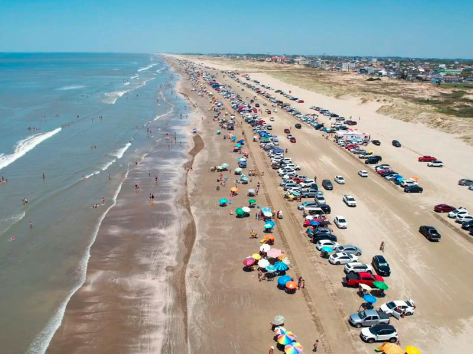

Praia do Cassino
A Praia do Cassino é uma joia localizada no município de Rio Grande, no estado do Rio Grande do Sul, Brasil. Famosa por seu tamanho colossal, já foi considerada a maior praia do mundo. Seu início fica a 22 quilômetros do centro da cidade do Rio Grande, nos Molhes da Barra, onde a Lagoa dos Patos encontra o mar. A praia se estende por mais de 200 km, desde a cidade do Rio Grande até o Chuí. O ponto extremo da praia, o Molhe Oeste, foi construído com toneladas de pedras que invadem o mar aberto. Sua formação, junto com o Molhe Leste, do outro lado do canal de navegação, protege a entrada e saída de navios para o Rio Grande. A Praia do Cassino é um lugar único, onde os banhistas estacionam seus veículos na areia, próximos à água. Este contraste de uma multidão de pessoas e guarda-sóis cercadas pelo mar e pelos carros é muito interessante. Além disso, a praia oferece uma extensa e larga faixa de areia, água mais quente e limpa que as outras praias do sul. Considerado um dos principais balneários do sul do Brasil, o Cassino abriga uma população fixa de aproximadamente 30 mil habitantes. Com uma rica história e uma série de atrações e curiosidades turísticas, a Praia do Cassino é sem dúvida um destino imperdível para quem visita o Rio Grande do Sul.